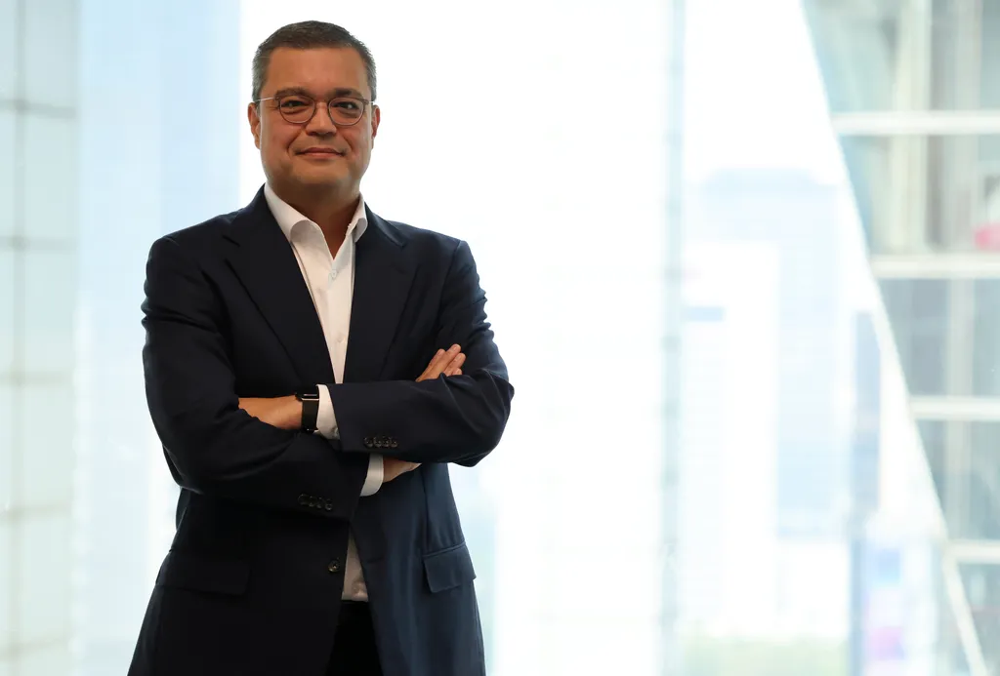
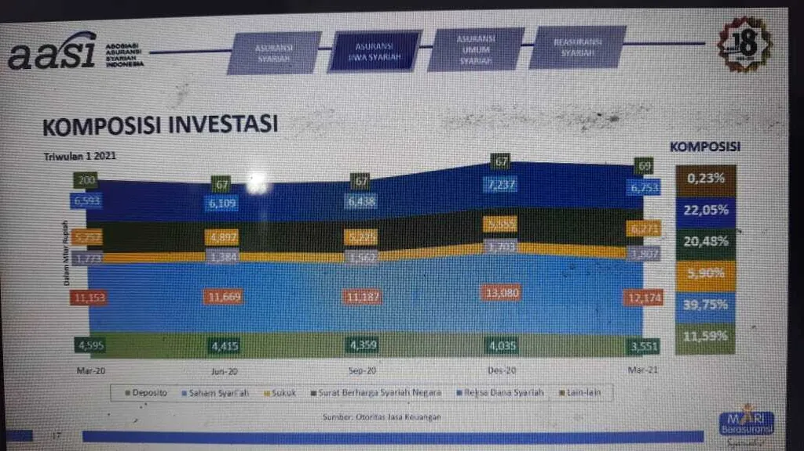
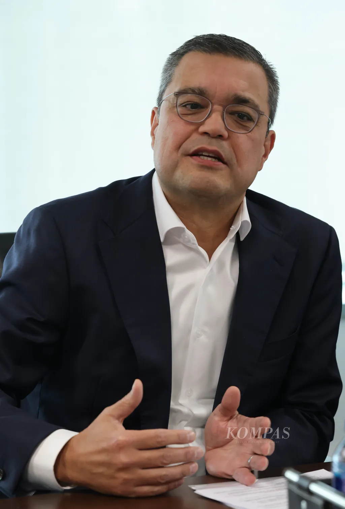

Potensi pasar asuransi syariah di Indonesia masih terbuka lebar seiring pertumbuhan penduduk, kelas menengah, dan kebutuhan perlindungan risiko. Peningkatan literasi syariah dan akses terhadap produk asuransi menjadi kunci untuk memperluas penetrasi pasar tersebut.
Potensi itu pula yang mendorong Sompo Insurance memperkuat bisnis asuransi syariah di Indonesia yang sudah hadir sejak 2017 melalui unit syariah. Mulai Oktober 2026, entitas syariah tersendiri, PT Sompo Insurance Indonesia, beroperasi untuk memperkuat pasar syariah mereka.
Chief Executive Officer Insurance Asia Pacific Sompo Kenneth Reilly menjelaskan lebih lanjut terkait aksi korporasi ini dalam wawancara dengan media di Jakarta, pada Selasa (22/9/2026).

KOMPAS/RIZA FATHONI
Bagaimana Anda melihat potensi pasar asuransi syariah di Indonesia?
Kami sangat bangga dengan posisi kami saat ini. Kami telah menawarkan produk syariah sejak 2017 sehingga ini bukan benar-benar usaha baru bagi kami.
Pada Agustus, kami memperoleh persetujuan dan pada Oktober kami berencana mulai beroperasi dengan entitas hukum syariah tersebut. Ini penting karena merupakan entitas hukum khusus syariah pertama dalam Grup Sompo yang beroperasi di lebih dari 40 negara.
Kami melihat ini sebagai kesempatan untuk membuat penawaran produk lebih inklusif dan menjangkau segmen pasar, melalui produk yang inovatif serta strategi distribusi yang sesuai dengan kebutuhan asuransi syariah atau takaful.
Apakah pembentukan entitas baru tersebut hanya untuk memenuhi regulasi atau karena Sompo melihat potensi pasar?
Tentu ada aspek regulasi, tetapi lebih dari itu, kami melihat kesempatan untuk menjangkau kelompok nasabah dan pemegang polis yang lebih luas.
Saat ini ada sekitar 20 entitas hukum syariah di Indonesia, termasuk Sompo. Kami melihat ini sebagai pasar yang terus berkembang.
Struktur entitas baru akan membuat kami lebih cepat dan lebih lincah dalam mengembangkan produk serta menjalankan proses yang sepenuhnya sesuai dengan prinsip syariah.
Produk apa yang akan dikembangkan setelah entitas syariah mulai beroperasi?
Kami akan mulai dengan produk yang lebih standar, seperti asuransi kendaraan bermotor, kemudian memperluas ke asuransi kesehatan untuk menjangkau lebih banyak nasabah.
Kami memiliki 25 cabang di Indonesia yang dapat digunakan untuk menjangkau komunitas yang kami layani. Ke depan, kami akan terus meningkatkan inovasi produk, tetapi terlebih dahulu kami perlu memahami kebutuhan nasabah dan karakteristik setiap komunitas.
Saat ini kami juga sudah memiliki produk syariah untuk kendaraan bermotor dan perjalanan.

BENEDIKTUS KRISNA YOGATAMA
Segmen masyarakat mana yang menjadi sasaran Sompo Sharia?
Kami melihat penetrasi ekonomi digital di Indonesia sangat kuat. Ini menciptakan kesempatan untuk memberikan edukasi, promosi, dan akses kepada berbagai segmen masyarakat.
Kami tidak secara khusus hanya menyasar Gen Z atau kelompok tertentu. Kami ingin membuat produk lebih mudah diakses oleh semua kalangan.
Kami akan memanfaatkan jaringan yang dimiliki dan bekerja dengan berbagai mitra distribusi, termasuk bank syariah, takaful (asuransi dengan prinsip usaha gotong royong), dan seluruh ekosistem terkait sehingga dapat menjangkau berbagai segmen masyarakat.
Tujuan kami adalah memberikan perlindungan kepada sebanyak mungkin masyarakat Indonesia.
Bagaimana Anda melihat persaingan di pasar asuransi syariah Indonesia?
Saya melihat persaingan sebagai hal yang positif. Persaingan meningkatkan produktivitas, mendorong inovasi produk, dan memperbaiki cara industri menjangkau masyarakat serta meningkatkan literasi.
Dengan sekitar 20 entitas hukum syariah dan kemungkinan bertambahnya pemain pada masa mendatang, hal itu mendorong kami untuk bekerja lebih baik.
Namun, perusahaan asuransi tetap harus resilien dan berkelanjutan. Kami harus bertanggung jawab dalam mengambil risiko karena kami ingin berada di Indonesia untuk 50 tahun berikutnya, bahkan 50 tahun setelah itu.
Kami menyambut persaingan karena hal tersebut baik bagi Indonesia dan masyarakat yang ingin kami layani.
Apa tantangan terbesar dalam pengembangan pasar asuransi syariah Indonesia?
Saya tidak melihatnya semata-mata sebagai tantangan, tetapi juga sebagai kesempatan.
Literasi perlu terus ditingkatkan. Tingkat literasi syariah secara umum mungkin sudah berada di kisaran 40 persen, tetapi pemahaman mengenai produk syariah dan pemanfaatannya masih jauh lebih rendah.
Kami ingin bekerja sama dengan komunitas dan mitra dalam seluruh ekosistem untuk meningkatkan literasi tersebut. Dengan meningkatnya literasi, produk dan layanan kami secara alami dapat menjangkau lebih banyak nasabah.

KOMPAS/RIZA FATHONI
Apakah pengalaman Indonesia dapat diterapkan di negara lain dengan populasi Muslim?
Ada banyak hal yang dapat dipelajari dari Indonesia. Indonesia memiliki kerangka kerja syariah yang sangat maju. Setiap negara memang memiliki pendekatan dan tingkat kematangan regulasi yang berbeda.
Malaysia merupakan contoh lain. Kami memiliki kehadiran yang kuat di sana, tetapi saat ini belum memiliki entitas hukum syariah dan masih beroperasi melalui perusahaan asuransi konvensional.
Karena itu, ada banyak hal yang berpotensi dipelajari dari Indonesia untuk diterapkan di pasar lain yang memiliki kebutuhan serupa.
Bagaimana Anda melihat tingkat literasi keuangan dan asuransi di Indonesia?
Menurut saya, menjadi kewajiban kami untuk bekerja sama dengan pemerintah dan berbagai pihak guna meningkatkan literasi keuangan, literasi asuransi, dan literasi syariah.
Sebagai bagian dari peluncuran Sompo Sharia, kami memiliki rencana bekerja sama dengan berbagai platform untuk meningkatkan literasi syariah dan membuat produk asuransi lebih inklusif dalam ekosistem halal.
Dengan populasi dan ekonomi yang terus tumbuh serta kelas menengah yang berkembang, tantangan literasi memang ada. Namun, itu juga merupakan kesempatan bagi kami untuk meningkatkan pemahaman mengenai kebutuhan perlindungan risiko dan produk keuangan.
Bagaimana Anda melihat perkembangan industri asuransi Indonesia dibandingkan dengan negara lain di Asia-Pasifik?
Fundamental pasar asuransi Indonesia tetap kuat dan masih memiliki banyak ruang untuk berkembang. Industri asuransi perlu terus menawarkan keahlian dan layanan manajemen risiko, produk dan layanan baru, serta menjangkau segmen masyarakat yang lebih luas.
Masih ada kesenjangan perlindungan (protection gap) yang perlu diatasi. Ini bukan hanya terjadi di Indonesia, tetapi juga di banyak negara Asia Tenggara dan Asia-Pasifik.
Karena itu, perusahaan asuransi perlu bekerja sama dengan mitra distribusi dan pemerintah untuk mengidentifikasi kebutuhan, memberikan edukasi, berbagi pengetahuan dan keahlian mengenai risiko, serta memperkecil kesenjangan perlindungan. Produk asuransi juga harus semakin inklusif dan mudah diakses oleh dunia usaha maupun masyarakat.
Bagaimana prospek industri asuransi secara umum di kawasan Asia-Pasifik?
Asia-Pasifik terus menjadi mesin pertumbuhan bagi Grup Sompo secara global. Kami beroperasi di lebih dari 40 negara dan pertumbuhan di Asia-Pasifik saat ini lebih tinggi dibandingkan kawasan utama kami lainnya, seperti Jepang, Amerika Utara, dan Eropa.
Masih banyak ruang untuk memperbaiki produk dan mengurangi kesenjangan perlindungan di sejumlah negara. Karena itu, kami melihat peluang besar untuk terus berinvestasi, membawa keahlian, teknologi, dan aset kami guna meningkatkan kesadaran terhadap risiko di kawasan ini.
Indonesia menjadi salah satu contoh komitmen jangka panjang tersebut. Kami telah beroperasi di Indonesia selama 51 tahun dan merupakan salah satu perusahaan asuransi asing yang telah lama hadir di negara ini.
Apa faktor utama yang akan mendorong pertumbuhan industri asuransi Indonesia?
Dari sisi demografi, Indonesia memiliki lebih dari 280 juta penduduk dan terus bertumbuh. Fundamental ekonomi juga kuat, disertai investasi infrastruktur, energi dan transisi energi, serta berlanjutnya investasi langsung dari luar negeri.
Semua itu menciptakan kebutuhan perlindungan dan mitigasi risiko yang besar. Selain itu, kelas menengah Indonesia terus berkembang dan membutuhkan perlindungan terhadap berbagai risiko.
Tantangannya adalah membuat asuransi dan sosialisasi mengenai risiko semakin mudah diakses oleh masyarakat.
Bagaimana Sompo menghadapi peningkatan risiko geopolitik dan risiko lainnya yang bisa berdampak bagi jasa asuransi?
Kami bergerak di bisnis risiko. Oleh karena itu, kami menganalisis berbagai risiko dan berusaha memproyeksikannya sebanyak mungkin sebelum memasuki suatu periode.
Kami melihat risiko geopolitik, perubahan iklim, teknologi, siber, dan berbagai risiko yang terus berkembang. Risiko geopolitik saat ini berada pada tingkat yang lebih tinggi dibandingkan tiga atau lima tahun lalu.
Kami menganalisis bagaimana risiko tersebut memengaruhi rantai pasok, inflasi, biaya penggantian aset, dan nasabah di berbagai negara.
Tekanan inflasi juga berdampak pada perusahaan asuransi karena pembayaran klaim berkaitan dengan nilai aset yang diasuransikan dan biaya penggantiannya. Karena itu, kami harus memasukkan perubahan tersebut dalam penetapan harga dan memastikan perlindungan perusahaan tetap memadai.
Bagaimana filosofi kepemimpinan Anda dalam mengelola pasar yang beragam di Asia?
Kekuatan tim kami di berbagai negara dibangun penghargaan terhadap keragaman dan lokalitas. Tidak ada pendekatan yang bisa diterapkan secara sama di semua negara.
Kami beradaptasi, tetapi memiliki prinsip yang sama, yaitu melayani nasabah dan pemegang polis, memberikan edukasi, serta mengambil risiko secara bertanggung jawab.
Kami ingin memberdayakan setiap negara untuk mengambil keputusan yang tepat bagi pemegang polisnya. Nilai penting lainnya adalah integritas. Kami harus selalu melakukan hal yang benar, tidak mengambil jalan pintas, dan memastikan pengendalian serta tata kelola berjalan dengan baik.
Sebagai pemimpin, saya harus memberikan contoh dengan bertindak berintegritas, memperhatikan kepentingan nasabah, dan menempatkan perspektif pemegang polis sebagai bagian penting dalam setiap keputusan.